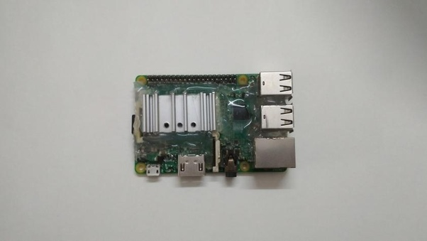

Work hard Earn harder and Conquer the hardestSparash Sharma
Quora Clone!
What made you sad about Quora?
Griffin Wagner left today. When I first saw Griffin, I was an apple fanboy and was writing 2-sentence answers feeling bad because none of them got popular. Griffin was a fanboy, but he wrote longer answers, included pictures and always seemed to say “Rock On” in the end of everything he wrote. I loved his answers because all of them seemed like they pulled the answer out of my mind. We agreed on so much and he seemed like a fellow fanboy of sorts. I tried copying a few things he did. I included pictures in everything I wrote, I adopted the idea of writing longer answers, and the one thing I didn’t realize was that I was still a fanboy. In retrospect, he was the one who shaped the entire idea of how to write about consumer electronics on Quora. Everyone seemed to copy him. Further, Griffin taught the world the art of using pictures in answers. One morning I saw Griffin writing about Apple on a blog called The Edible Apple. The name was great, I loved the other content on the blog and the blog was run by one other person named Daniel Ohanessian. I wanted in. Messaging Daniel wasn’t hard. I entered as the guy who would write about Apple leaks and rumors, and now I own 50% of the firm. Griffin and I became good friends messaging each other. He was my wingman and we even joked of fucking each other. We wrote a few answers talking about how the other is a way better writer, we compared stats and then he’d tell me they don’t matter, and he felt like a nice, caring sibling at times. Griffin actuated some innovative ideas that ultimately ended up changing Quora in the long (not that long) run. He came out with RockOn Ads, which was a service where you could pay him $2 to put an advertisement for your Quora profile on the bottom of his answer. The thing ended up not being a hit because of Quora policy changes. Next, he tried bringing a banner revolution where you’d put a banner at the end of your answer to make people remember you. It worked very well until Quora changed policies to go against it. At one point, he started a Discord server for The Edible Apple. The guy basically single handedly started the revolution of Quora blogs having Discord servers. He had no idea it’d give birth to servers that some people spend hours and hours on. Griffin ended up leaving TEA when Daniel and I felt like he wasn’t doing much and downgraded him to a lower post. I still don’t know if I regret that, because it ended up being a huge change for TEA and its fanfare, as the ordeal brought some controversy with it. It was sad to see Griffin go and he wasn’t happy with things said about him after the event, but we drifted ways and he now left the platform he changed so drastically. On a sidenote, I have a suspicion this was written by him, and that the guy is too much of a legend to reveal it. Griffin left Quora and it feels like a punch in the gut as much as it does a hope of fixing things in 2020.
Does your smartphone really need a screen protector?
I don’t use a phone unless it has one.
I’m pretty clumsy with my phone, and with phones losing bezels and gaining glass on more sides than one, more protection is better. Now, to see if a screen protector works, we should talk about how the tempered glass on your phone is more durable than the glass in your windows. From this post, I gather that Corning Gorilla Glass is made by dipping normal glass in a bath of molten salt. Large potassium ions from the salt replace the smaller sodium ions in the glass in an ion exchange. From there, the glass cools and the result is glass with very tightly packed ions. Gorilla glass is strong because it has a layer of compression among the ions. It doesn’t break often when you drop it because the ions are very tightly packed together and don’t separate in a crack. When this glass is scratched, ions actually are removed from the glass, which reduces the compression. As scratches multiply, compression reduces and the glass ends up being much easier to crack. A screen protector protects your phone from scratches and in doing so, it keeps your phone as safe from scratches as it possibly can be. I don’t see any reason not to have one since they’re very cheap and they are effectively invisible.
What is the best computer you’ve owned?
The Raspberry Pi 3.

The Pi 3 was the first computer I bought myself. I had hit rock bottom as a 14 year old and I was failing in basically every way I possibly could then. Grades were terrible, I barely had any friends, I was often depressed and life sucked. It sucked mostly because I chose to spend all my time playing a video game. One fine day, my game-controller broke and left me to realize I was effectively lifeless without video games. I didn’t have anything to do. My desktop had given up the ghost months ago and I didn’t have a phone. I then went out in search of ways to make enough money so I can buy myself a new controller. I repaired electronics. I made 40 dollars for the controller but then I realized life is better without video games and that I’d be better off getting a Raspberry Pi as a rudimentary computer. Thank god I did. Now, using the Raspberry Pi as a desktop machine was pretty much unheard of outside of clickbait news headlines and low-volume YouTube videos. That was a little scary, but I was pretty determined. I found Quora and decided to start writing here. I eventually got 100 followers and weeks later, someone offered me an opportunity to make a little quick cash. I said yes and got scammed. That still taught me two things. I can make money writing and to make money as a content writer, I need to contact the right people rather than waiting for scammers to contact me. I eventually became something of a journalist and bought myself anything I thought was cool enough to write about. And it all happened because I decided to put the controller down. I haven’t bought a controller to this date. With all that said, I think the Pi was a great computer. I ran it 24/7, I did basically all my work on it and I overclocked it to 2.1GHz. Yuge feat. At one point, I could’ve used a different computer, but I used the Pi out of sentiment. It was by far the best computer I’ve ever owned.